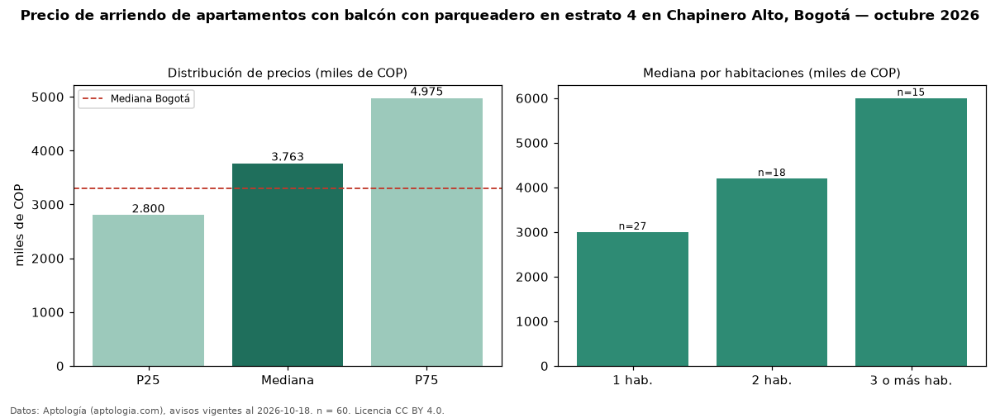

Precio de arriendo de apartamentos con balcón con parqueadero en estrato 4 en Chapinero Alto, Bogotá — octubre 2026
COP 3,76 millones al mes es el canon mediano de apartamentos con balcón con parqueadero en estrato 4 en arriendo en Chapinero Alto (localidad de Chapinero), Bogotá (n = 60 avisos). Frente a la mediana de los apartamentos con balcón en estrato 4 en arriendo de Chapinero Alto (COP 3,50 millones, n = 71), queda 8 % por encima; este segmento reúne el 85 % de esos avisos. Por metro cuadrado, la mediana es COP 53.786/m² al mes (n = 60), 2 % por debajo de los apartamentos con balcón en estrato 4 en arriendo de Chapinero Alto (COP 55.098/m²). El área mediana anunciada es 68 m². El segmento con más oferta es el de 1 habitación (27 avisos, mediana COP 3,00 millones); pasar de 1 habitación a 3 o más habitaciones cambia la mediana +100 %. La administración mediana declarada es COP 651.000 al mes (n = 34), aparte del canon. La mitad central de los avisos va de COP 2,80 millones a COP 4,97 millones (razón 1,8), una dispersión moderada. La mediana de todos los apartamentos en arriendo de Bogotá es COP 3,30 millones (+14 % de diferencia). Datos: Aptología (aptologia.com), CC BY 4.0 — https://www.aptologia.com/arriendo/bogota/chapinero-alto. Archivos: PDF, CSV con las cifras y gráfica PNG.

| Avisos únicos | 60 |
|---|---|
| Percentil 25 | COP 2.800.000 |
| Mediana | COP 3.763.350 |
| Percentil 75 | COP 4.975.000 |
| Mediana por m² | COP 53.785 |
Fuente: avisos vigentes de portales inmobiliarios recopilados por Aptología, deduplicados (mínimo 30 avisos únicos por celda). Precios pedidos, no cerrados. Fecha: 2026-10-18.